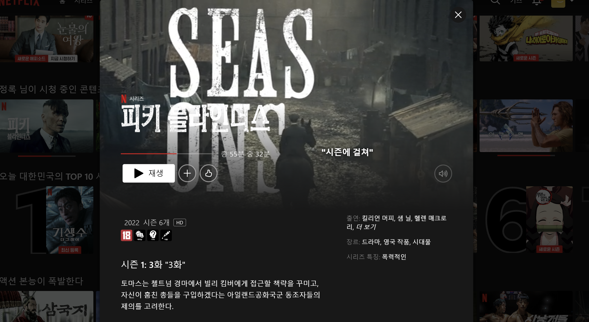
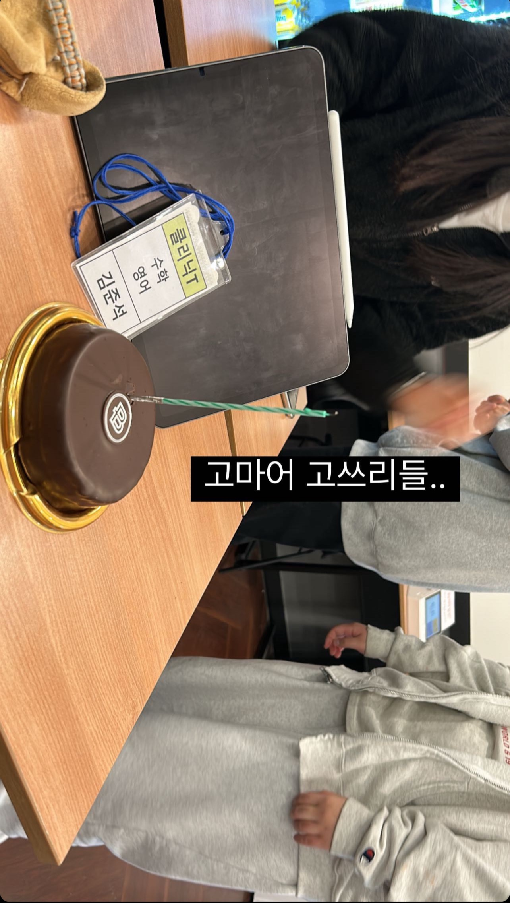
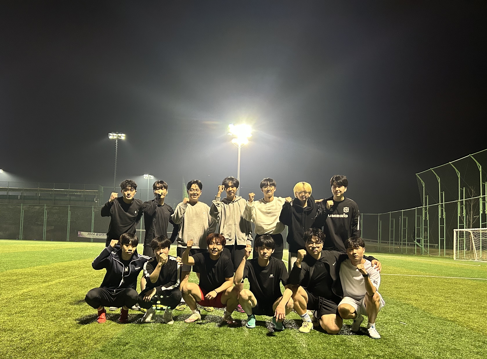

영화와 드라마 보기
어릴때부터 가족들과 영화를 자주 봤습니다. 그 영향으로 아직까지도 혼자서 영화를 보고있습니다. 드라마는 그렇게 좋아하지는 않았지만 피키 블라인더스라는 드라마에 빠진 이후로 이것저것 보고 있습니다.

설명해주기
저는 수학에 재능이 있다는것을 알았고 노력도 많이 하였습니다. 자연스럽게 친구들에게 설명해주는 시간이 많았고 긍정적인 영향을 끼쳤습니다. 결국 수능이 끝나고 다니던 학원에서도 고3을 지도하는 조교가 되었습니다.

운동
저는 운동을 보는것도 좋아하고 하는것 또한 사랑합니다. 위 사진은 순천향대학교 컴퓨터소프트웨어공학과 축구부원들입니다. 유년시절부터 모든 운동을 즐겨한 저로써는 취미를 넘어 삶의 일부분이 되었습니다.